Kurashiki
Kurashiki · Okayama
Kurashiki
Highlighted on the Okayama map.
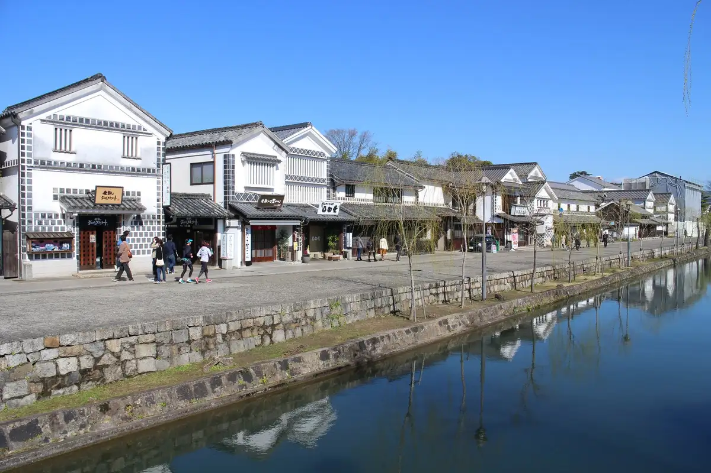
Stay
Tennen Onsen Achi Baths Domiiin Kurashiki
Tennen Onsen Momotaro Baths Supa Hotel Inn Kurashiki Mizushima
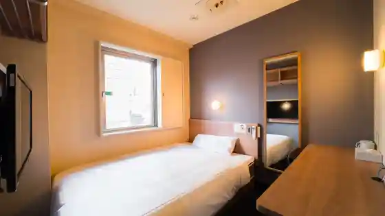
Guriinritchi Hotel Kurashiki Ekimae Jinko Onsen Futamata Yu no Hana
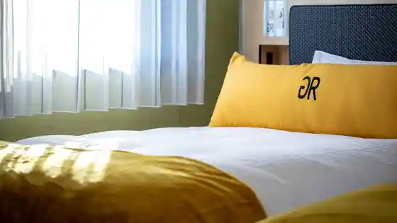
Washiba Onsen Washiba Gu Land Hotel Bizen Ya Koshi
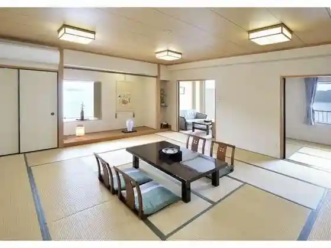
Kurashiki Yuka Onsen Hotel Yamamomo Hana
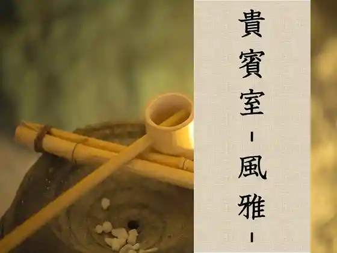
Senchurion Hotel & Supa Kurashiki
Apa Hotel (Kurashiki Ekimae)
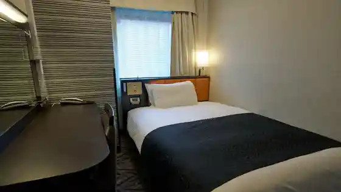
Kurashiki Kokusai Hotel
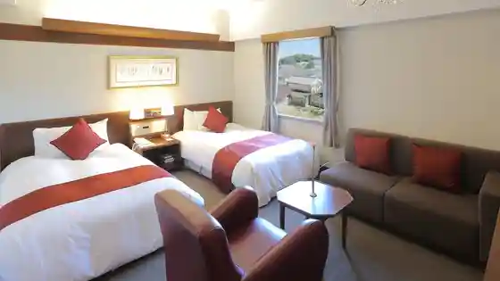
Kurashiki Roiyaruato Hotel
Dining
Suteki no Don Kurashiki Mise
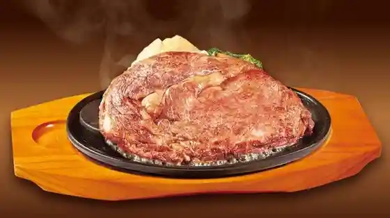
Kurashiki Koshitsu Izakaya Fuji to Kawasemi
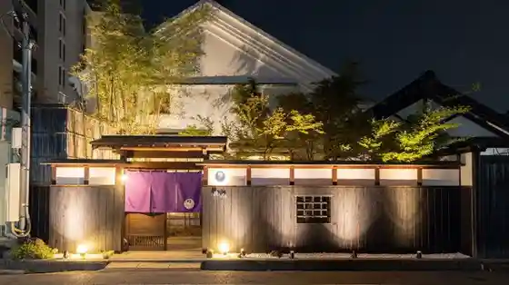
Kyushu Koshitsu Sakaba Za · Goemon Kurashiki Ekimae Mise
Jidori to Sakana to Koshitsu Fuji Ko Kurashiki Ekimae Mise
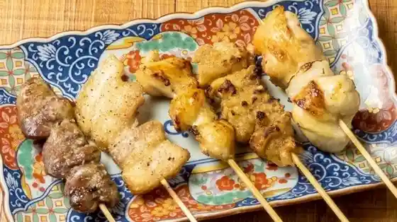
Koshitsu Izakaya I
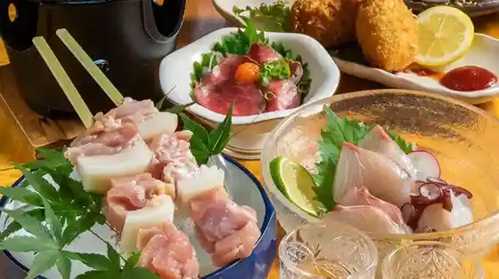
Sumibi Bisutoro Mitora
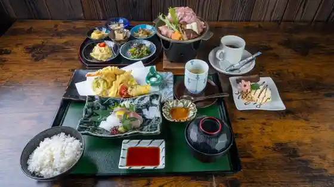
Akaka Ra Kurashiki Hori Minami Mise
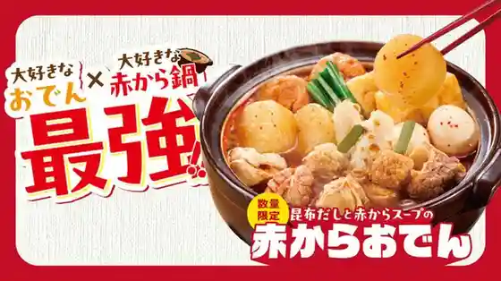
Mataichi Bekkan
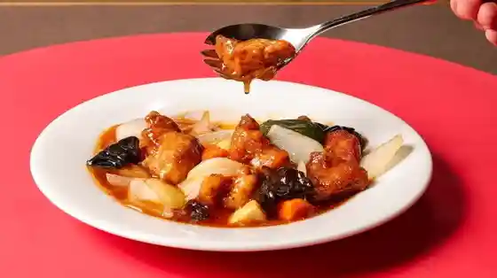
Jikasei Soba Takeno Ya Naka Sho Mise
Ya Dai Zushi Kurashiki Ekimae Town 2 Go Mise
Koshitsu Izakaya Warai Emon Kurashiki Ekimae Mise
Sumiyaki Sakaba Ichiya
Ko Minka Baru Kyuhon Fuji Tei
Udonto Sake to Irodori siki
Soji Bo Kurashiki Ionmoru Mise
Ware Sho Sato Kurashiki Mise
Onsen
Tennen Onsen Achi Baths Domiiin Kurashiki Public Bath
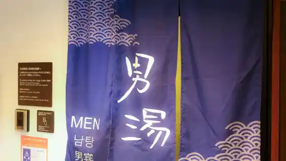
Tennen Onsen Momotaro Baths Supa Hotel Inn Kurashiki Mizushima Public Bath
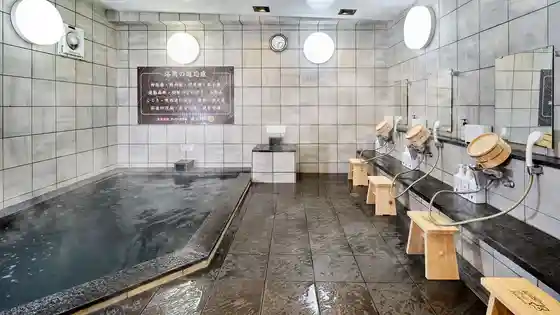
Sights
Kurashiki Bikan Chiku
Ohara Art Museum
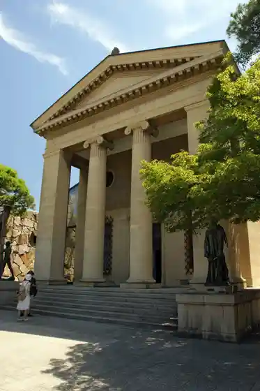
Kurashiki Yakusho
Kurashiki Aibiisukuea
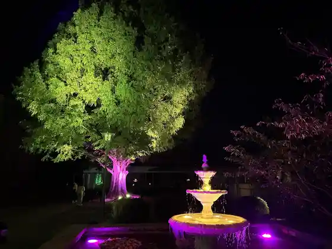
Seto Bridge (Washiba Yama)
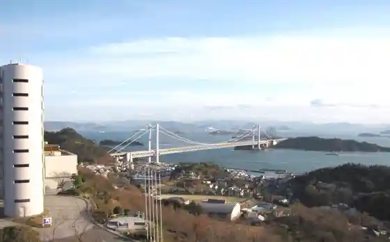